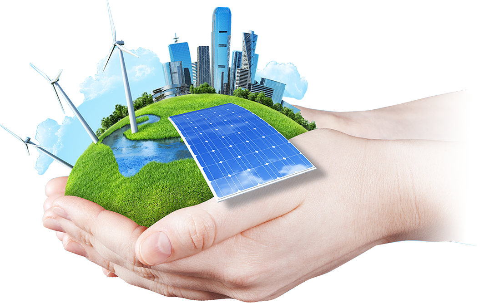

Porque esta campanha ?
A Indústria 4.0 trouxe avanços tecnológicos incríveis, como automação, inteligência artificial e internet das coisas. Porém, junto com esse crescimento, também surgem desafios ambientais como:
Aumento do consumo de energia
Geração de resíduos eletrônicos
Emissão de poluentes
Esta campanha foi criada para conscientizar empresas e pessoas sobre a importância de unir tecnologia e sustentabilidade, mostrando que inovação e preservação ambiental podem caminhar juntas. Nosso objetivo é incentivar práticas industriais mais responsáveis, reduzindo impactos ambientais e construindo um futuro mais sustentável para as próximas gerações.
O Futuro da Indústria é Sustentável
A Indústria 4.0 combina tecnologias avançadas como automação, Internet das Coisas e inteligência artificial, para otimizar processos produtivos. Além de aumentar a eficiência, essas soluções contribuem para a redução dos impactos ambientais e o uso consciente dos recursos naturais.

Veja mais sobre Indústria 4.0O que você pode fazer agora?
Pequenas atitudes podem gerar grandes mudanças. Veja como você pode contribuir:
- ✓ Incentivar a reciclagem de resíduos eletrônicos
- ✓ Reduzir o desperdício de materiais industriais
- ✓ Utilizar tecnologias que diminuam impactos ambientais
- ✓ Compartilhar informações sobre sustentabilidade
- ✓ Praticar consumo consciente
Cada ação ajuda na construção de uma indústria mais limpa e eficiente.